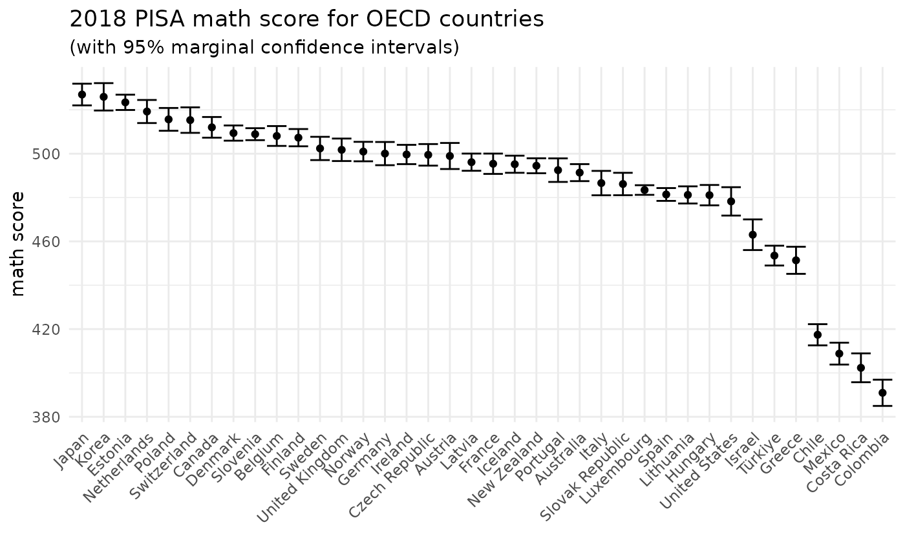
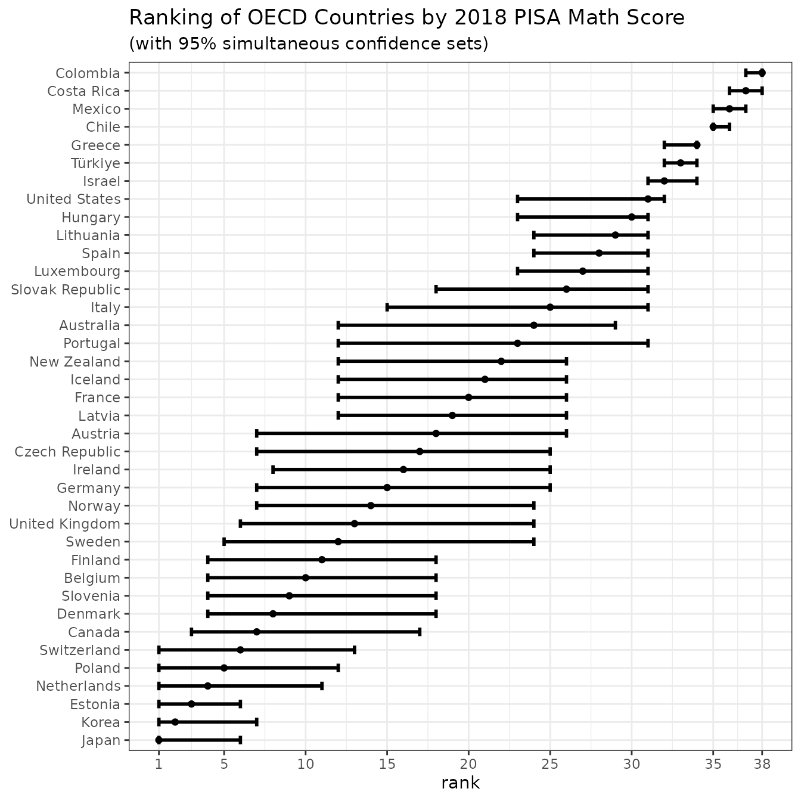
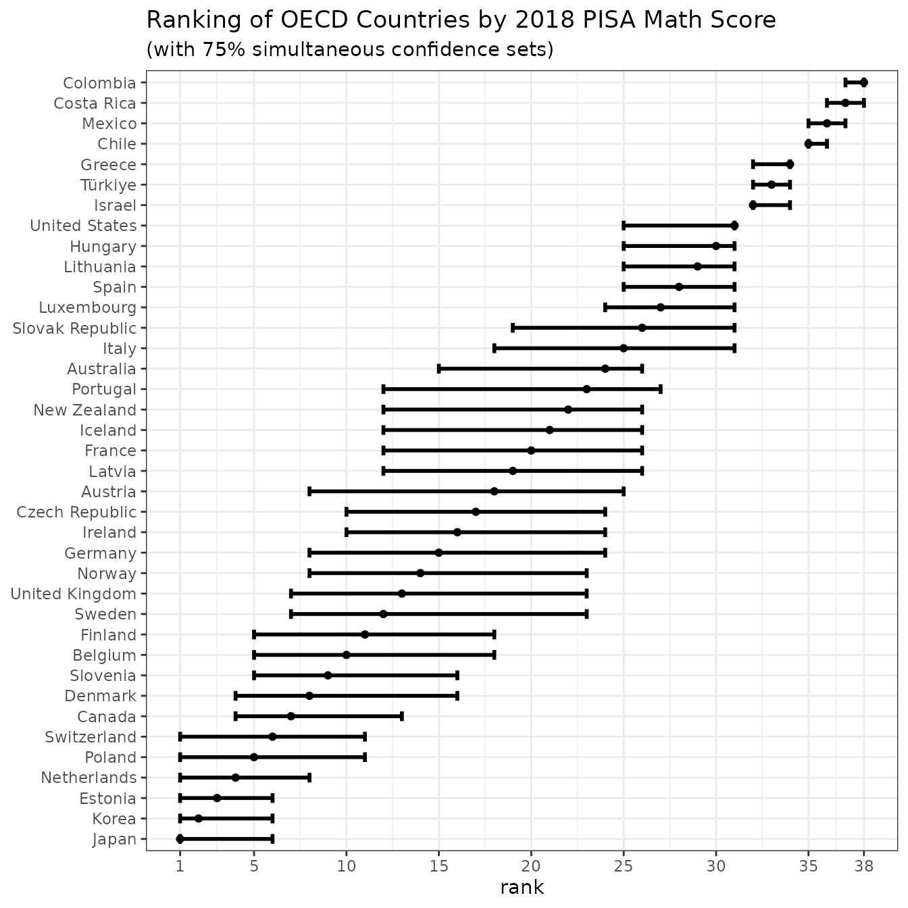

The following example illustrates how the csranks
package can be used to quantify the statistical uncertainty in the PISA
ranking of OECD countries. It shows how to compute marginal and
simultaneous confidence sets for ranks as well as a confidence set for
the top-5 countries.
Over the past two decades, the Organisation for Economic Co-operation and Development (OECD) have conducted the PISA test. The goal of this test is to evaluate and compare educational systems across countries by measuring 15-year-old school students’ scholastic performance on math, science, and reading. Each country that participates in a given year has to draw a sample of at least 5,000 students to be tested. Every three years, the OECD publishes international league tables ranking countries by their performance according to the PISA test scores.
In this example, we use publicly available data from the 2018 PISA test to examine which countries do best and worst at math. We restrict attention to the OECD countries.
First, load the package csranks. Second, load the data
and take a quick look at it:
library(csranks)
library(ggplot2)
data(pisa)
head(pisa)
#> jurisdiction science_score science_se reading_score reading_se math_score
#> 1 Australia 502.9646 1.795398 502.6317 1.634343 491.3600
#> 2 Austria 489.7804 2.777395 484.3926 2.697472 498.9423
#> 3 Belgium 498.7731 2.229240 492.8644 2.321973 508.0703
#> 4 Canada 517.9977 2.153651 520.0855 1.799716 512.0169
#> 5 Chile 443.5826 2.415280 452.2726 2.643766 417.4066
#> 6 Colombia 413.3230 3.052402 412.2951 3.251344 390.9323
#> math_se
#> 1 1.939833
#> 2 2.970999
#> 3 2.262662
#> 4 2.357476
#> 5 2.415888
#> 6 2.989559The PISA study’s math scores are stored in math_score.
These test scores are estimated from a random sample of students from
each country. The standard errors of the scores are stored in
math_se. The following graph shows the raw math scores with
95% marginal confidence intervals:
ggplot(pisa, aes(x=reorder(jurisdiction,math_score,decreasing=TRUE), y=math_score)) +
geom_errorbar(aes(ymin=math_score-2*math_se, ymax=math_score+2*math_se)) +
geom_point() +
theme_minimal() +
labs(y="math score", x="", title="2018 PISA math score for OECD countries", subtitle="(with 95% marginal confidence intervals)") +
theme(axis.text.x = element_text(angle = 45, hjust = 1))
The function irank() can be used to produce integer
ranks based on these math scores:
math_rank <- irank(pisa$math_score)
head(pisa[order(math_rank),])
#> jurisdiction science_score science_se reading_score reading_se math_score
#> 19 Japan 529.1354 2.593168 503.8560 2.670974 526.9733
#> 20 Korea 519.0073 2.802762 514.0523 2.940543 525.9330
#> 9 Estonia 530.1080 1.884569 523.0170 1.842242 523.4146
#> 25 Netherlands 503.3838 2.840622 484.7837 2.650864 519.2310
#> 28 Poland 511.0356 2.607236 511.8557 2.702458 515.6479
#> 34 Switzerland 495.2763 3.004997 483.9294 3.124322 515.3147
#> math_se
#> 19 2.471475
#> 20 3.121394
#> 9 1.743602
#> 25 2.632278
#> 28 2.602085
#> 34 2.908004Japan is ranked first (i.e., best), Korea is ranked second and so on.
Since the math scores are estimates of countries’ true
achievements, the ranks assigned to these countries are also
estimates, rather than the true ranks.
Just like the test scores, the ranks therefore also contain statistical
uncertainty. Various functions in the csranks package
implement methods for the quantification of this uncertainty.
First, we are interested in finding out which conutries could be
among the top-5 in terms of their true math score. The
function cstaubest answers this question. It requires as an
argument an estimate of the covariance matrix of the test scores. In
this example, it is reasonable to assume the estimates from the
different countries are mutually independent, so the covariance matrix
is diagonal:
math_cov_mat <- diag(pisa$math_se^2)The function cstaubest can then be used to compute a 95%
confidence set for the top-5:
CS_5best <- cstaubest(pisa$math_score, math_cov_mat, tau = 5, coverage = 0.95)
pisa[CS_5best, "jurisdiction"]
#> [1] Belgium Canada Denmark Estonia Finland Japan
#> [7] Korea Netherlands Poland Slovenia Sweden Switzerland
#> 37 Levels: Australia Austria Belgium Canada Chile Colombia ... United StatesThe confidence set contains 12 countries: with probability approximately 0.95, these 12 countries could all be among the top-5 according to their true math score. According to the estimated test scores, the countries Japan, Korea, Estonia, Netherlands, and Poland are the top-5 countries. However, due to the statistical uncertainty in the ranking, there is uncertainty about which countries are truly among the top-5. The confidence set above shows all countries that could all be among the top-4 (with probability approximately 95%).
With lower required level of confidence, the confidence set for the top-5 shrinks:
CS_5best_90 <- cstaubest(pisa$math_score, math_cov_mat, tau = 5, coverage = 0.9)
pisa[CS_5best_90, "jurisdiction"]
#> [1] Belgium Canada Denmark Estonia Finland Japan
#> [7] Korea Netherlands Poland Slovenia Switzerland
#> 37 Levels: Australia Austria Belgium Canada Chile Colombia ... United StatesAt the 90% level, we can now exclude Sweden to be among the top-5.
Now, suppose we are interested in a single country, say the United Kingdom. We would like to learn where its true ranking may lie. A marginal confidence set for the rank of the United Kingdom answers this question:
uk_i <- which(pisa$jurisdiction == "United Kingdom")
CS_marg <- csranks(pisa$math_score, math_cov_mat, simul=FALSE, indices = uk_i, coverage=0.95)
CS_marg
#> $L
#> [1] 7
#>
#> $rank
#> [1] 13
#>
#> $U
#> [1] 23
#>
#> attr(,"class")
#> [1] "csranks"CS_marg$L and CSmarg$U contain the lower
and upper bounds of the confidence sets for the ranks.
Based on the estimated math scores, we would rank the United Kingdom at 13-th place. However, due to statistical uncertainty in the ranking, its true rank could be anywhere between 7 and 23, with probability approximately 95%.
Finally, now suppose we are interested in the entire ranking of countries, for instance because we want to draw inferences across countries and compare their places in the ranking. Simultaneous confidence sets for the ranks of all countries allow one to do just that:
CS_simul <- csranks(pisa$math_score, math_cov_mat, simul=TRUE, coverage=0.95)
plotsimul <- plot(CS_simul, popnames=pisa$jurisdiction,
title="Ranking of OECD Countries by 2018 PISA Math Score",
subtitle="(with 95% simultaneous confidence sets)")
plotsimul
The graph can be saved as
ggplot2::ggsave("mathsimul.pdf", plot=plotsimul)The graph shows confidence sets for all 37 OECD countries. These are not marginal, but simultaneous confidence sets. The difference is that a marginal confidence set for a given country covers the true rank for that particular country with probability approximately 95%. On the other hand, the simultaneous confidence sets in the graph contain the entire true ranking with probability approximately 95%. That means they cover all 37 true ranks simultaneously with the desired probability.
Such confidence sets allow us to draw inferences across countries and compare their ranks. For instance, Chile, Mexico and Colombia have confidence sets for the ranks that do not overlap with the confidence sets of the other countries. This means, with approximately 95%, these countries perform worse than the others. One can also see, that the countries in the middle of the ranking cannot be ranked against each other with. There is too much statistical uncertainty to conclude, for instance, that Germany performs significantly worse than Korea (their confidence sets both contain rank 7).
However, at lower levels of confidence, Germany’s and Korea’s confidence sets do not overlap, so that with such lower levels of confidence one could conclude that Korea performs significantly better than Germany:
CS_simul75 <- csranks(pisa$math_score, math_cov_mat, simul=TRUE, coverage=0.75)
plotsimul75 <- plot(CS_simul75, popnames=pisa$jurisdiction,
title="Ranking of OECD Countries by 2018 PISA Math Score",
subtitle="(with 75% simultaneous confidence sets)")
plotsimul75
Check out the documentation of individual functions at the package’s website and further examples in the package’s Github repository.